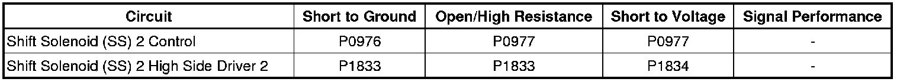
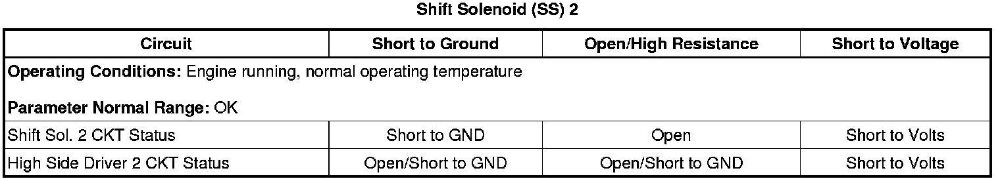
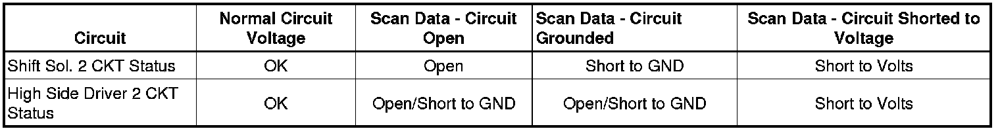

6L50/6L80/6L90 - Automatic Transmission
DTC P0976 or P0977
Diagnostic Instructions
* Perform the Diagnostic System Check - Vehicle (Initial Inspection and Diagnostic Overview) prior to using this diagnostic procedure.
* Review Strategy Based Diagnosis (Initial Inspection and Diagnostic Overview) for an overview of the diagnostic approach.
* Diagnostic Procedure Instructions (Initial Inspection and Diagnostic Overview) provides an overview of each diagnostic category.
DTC Descriptors
DTC P0976
- Shift Solenoid (SS) 2 Control Circuit Low Voltage
DTC P0977
- Shift Solenoid (SS) 2 Control Circuit High Voltage
Diagnostic Fault Information

Typical Scan Tool Data

Scan Tool Parameter Data

Circuit/System Description
The shift solenoid (SS) 2 is part of the control solenoid (w/body and TCM) valve assembly. The assembly is attached to the lower control valve body and has no serviceable parts. The shift solenoid is a normally closed (NC), On/Off solenoid. When the TCM opens the solenoid ground circuit, (solenoid off) solenoid signal fluid exhausts and the clutch select valve 3 moves to the non-apply position. The TCM shifts the transmission by operating the solenoids in on/off combinations. Solenoid power is supplied by the TCM through a high side driver (HSD). The HSD protects the circuits and components that the TCM powers. Should the circuit overload the driver will shutdown. After the overload is removed the HSD reset.
Conditions for Running the DTC
* The engine run time is greater than 5 seconds.
* The SS 2 is commanded ON or OFF.
Conditions for Setting the DTC
P0976
The TCM detects an internal low voltage electrical malfunction of the SS 2 control circuit when the SS 2 is commanded OFF for 300 milliseconds.
P0977
The TCM detects an internal high voltage electrical malfunction of the SS 2 control circuit when the SS 2 is commanded ON for 300 milliseconds.
Action Taken When the DTC Sets
* DTCs P0976 and P0977 are Type A DTCs.
* The TCM defaults the transmission to 3rd gear if the current gear is 1st, 2nd, or 3rd, or 5th gear if the current gear is 4th, 5th, or 6th gear.
* The TCM inhibits the torque converter clutch (TCC).
* The TCM commands maximum line pressure.
* The TCM freezes transmission adaptive functions.
Conditions for Clearing the DIC/DTC
DTCs P0976 and P0977 are Type A DTCs.
Diagnostic Aids
When attempting to set solenoid electrical DTCs, ensure the TCM is warmed up and the transmission is operated in 2nd gear long enough to ensure a 3°C (5°F) increase in TCM substrate temperature. This will place the TCM under the optimal conditions to test solenoid electrical DTCs.
Reference Information
Schematic Reference
Automatic Transmission Controls Schematics (Electrical Diagrams)
Connector End View Reference
Component Connector End Views (Connector Views)
Electrical Information Reference
* Circuit Testing (Component Tests and General Diagnostics)
* Connector Repairs (Component Tests and General Diagnostics)
* Testing for Intermittent Conditions and Poor Connections (Component Tests and General Diagnostics)
* Wiring Repairs (Component Tests and General Diagnostics)
Description and Operation
Electronic Component Description (Electronic Component Description)
DTC Type Reference
Powertrain Diagnostic Trouble Code (DTC) Type Definitions (Diagnostic Trouble Code Descriptions)
Scan Tool Reference
Control Module References (Programming and Relearning) for scan tool information
Circuit/System Testing
1. Ensure the transmission fluid temperature is between 50-80°C (122-176°F).
2. Operate the vehicle in 4th, 5th, or 6th gear with TCC applied, long enough to ensure at least a 3°C (5°F) rise in TCM substrate temperature.
3. Observe the scan tool data parameter Shift Sol. 2 CKT Status. The parameter should display OK.
• If the parameter displays Open, Short to Volts, Short to GND, or if the DTC resets, perform the Control Solenoid Valve and Transmission Control Module Assembly Inspection (Control Solenoid Valve and Transmission Control Module Assembly Inspection) .
• If no concerns are found during the inspection, replace the control solenoid (w/body and TCM) valve assembly.
Repair Instructions
Perform the Diagnostic Repair Verification (Verification Tests) after completing the diagnostic procedure.
* Control solenoid (w/body and TCM) valve assembly replacement. Refer to Control Module References (Programming and Relearning) for replacement, setup, and programming.
* Perform the Service Fast Learn Adapts (Programming and Relearning) if internal transmission repairs are performed.